温柔的谎言
我是一名记者,也是一名养生爱好者。去年，我在微博无意曝光了采访某销售桃胶企业员工的对话内容和录音，这位员工说， 中国桃胶市场八成都是人造假桃胶，基本没几个是真的！

"部分不法商家宣传的天然桃胶，其中掺杂其他胶类物质制成假的桃胶，通过改变原料成分，将原属于桃胶的成分利用其它胶代替，然后经过纯度提炼进行假冒，不仅没有营养价值，其中还含有很多有害物质。有些商家将质量比较差的再次重塑成颗粒均匀，以次充好。"
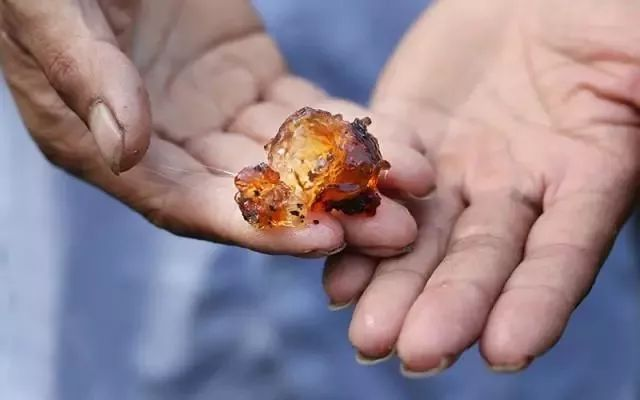
当时这条微博引起了不小轰动，后来，我在后台收到一位朋友的微博私信，她说她叫燕婷，因为这两年市场被假桃胶充斥，山里的真桃胶根本卖不出去，乡亲们都一筹莫展， 希望我能帮乡亲们做个宣传，为山里的真桃胶发声。
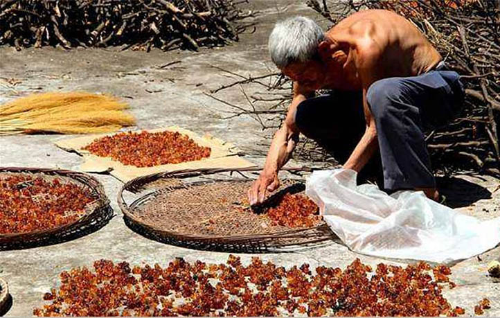
刚开始我以为燕婷跟网上那些"打着野生真桃胶旗号卖造假桃胶"的商贩们是一伙的，后来没想到她坚持邀请我到她家乡，了解一下他们的桃胶。十几个小时的火车加上山路，一路辗转，最后终于来到了燕婷的家乡——云南丽江
燕婷一早就叫了辆红色机动三轮车来村口等我。进了村以后，我发现村里年轻人很少，多是留守老人和孩子。
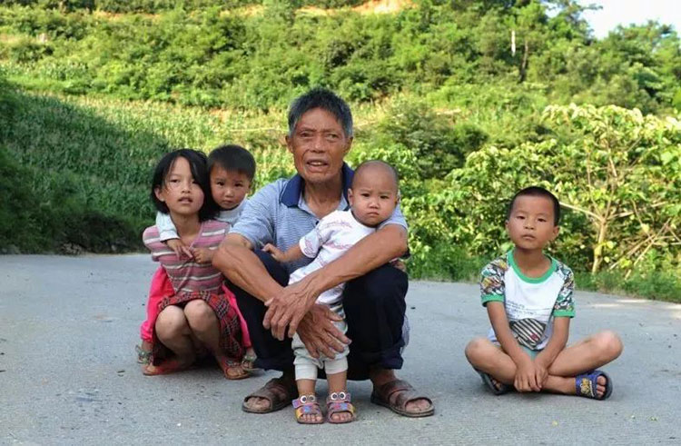
在燕婷家吃了一顿粗茶便饭，我跟她说想自己到村里转一转，没想到这一圈转下来，从村里老人的口中了解了燕婷和桃胶的深厚渊源。
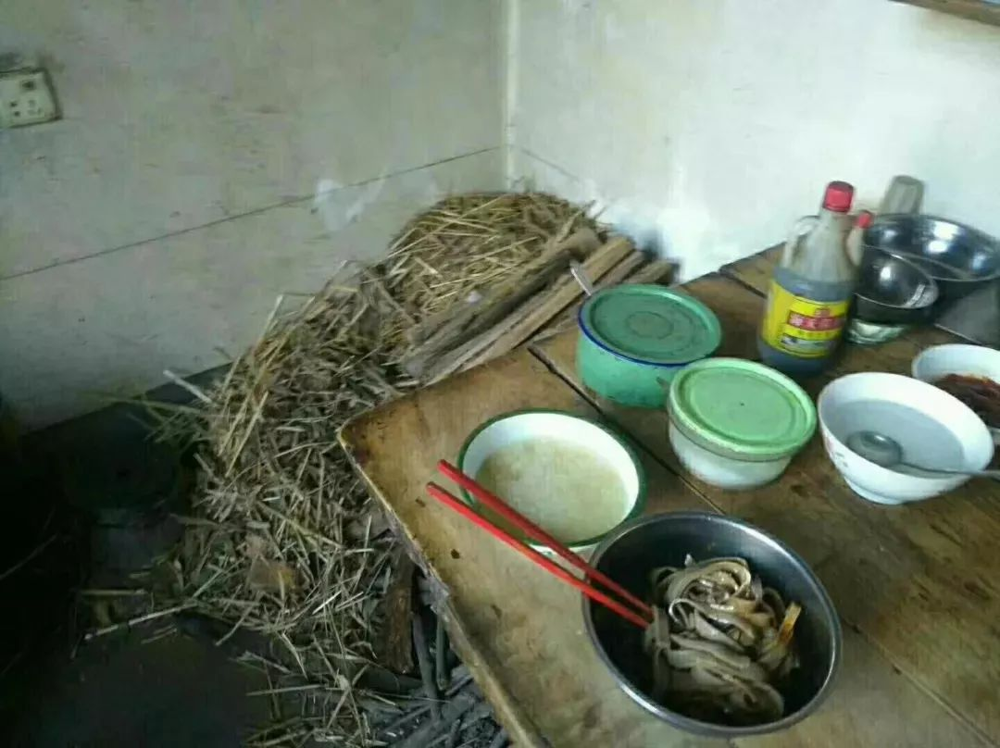
一方好水土，孕育桃树精华
燕婷是一位土生土长的云南女孩，家里采摘桃胶已经好几十年了，因为生在桃胶之家，家里也经常吃桃胶，所有整个人看起来气色很不错。
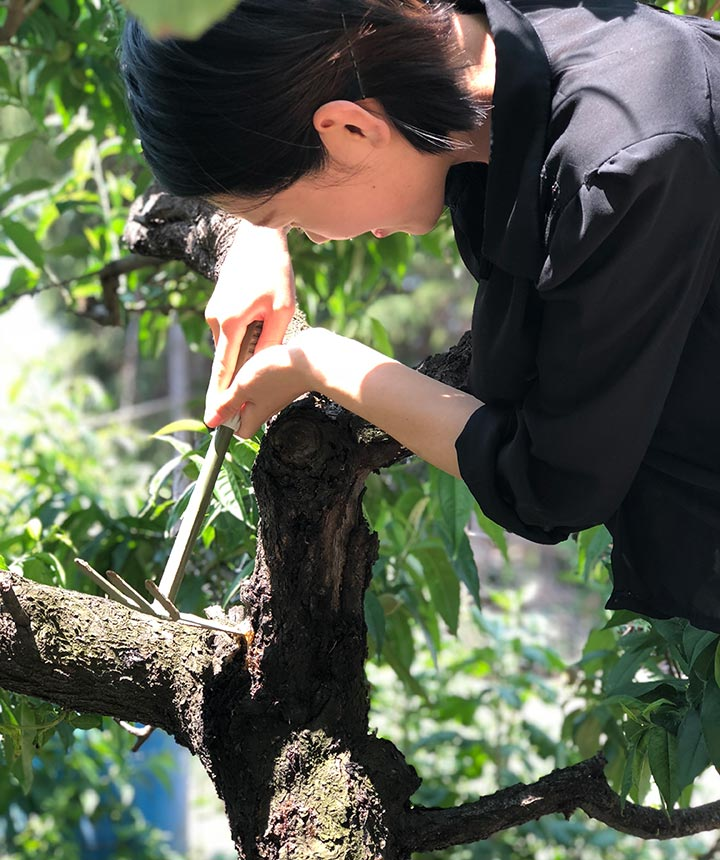
燕婷家采摘桃胶的历史，从祖爷爷那一代就开始了。云南大山里没有信号，没有道路，都是靠天吃饭，许多山珍都养在深山少有人知。
燕婷的家乡云南是盛产桃胶的地方，这里产的桃胶口感非常独特，桃胶颗粒大小饱满，没有任何化学加工，非常健康安全。
假桃胶满天飞，真桃胶无人买
山里人欲哭无泪
我们都知道，桃胶近几年在明星和网红达人们的推荐下变得很受欢迎，导致很多不法投机分子利益熏心，制作假桃胶出售。
燕婷的父母从未出过大山，文化不高，但都是善良淳朴的人。从小就教育燕婷，做人一定要有良心，有诚信。
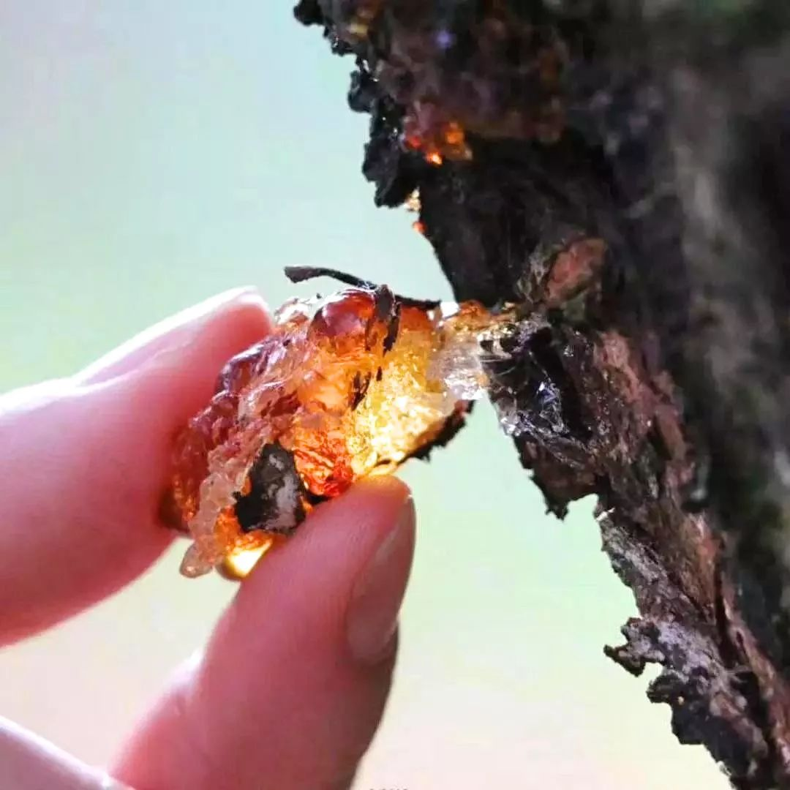
燕婷看到市面上很多不是天然桃胶却打着云南桃胶的旗号在售卖，自家的真桃胶却卖不出去，感觉很心痛，毕竟是吃进身体里的东西，不能让不法商家残害不知情的消费者。
燕婷决不能让黑心商家坏了桃胶这份美好事业以及山里人的淳朴，她不相信诚信的人干不过市场那些奸商。
燕婷保证
一、胶质纯度：只卖云南野生桃胶，绝不用其他化工原料的松胶以次充好；
二、货真价实：绝不虚抬价格，只挣良心钱；
三、郑重承诺：不满意退货退款，來回运费算我们的！這個生意靠的就是回头客，我们深知這個道理！
如果你也想尝尝真正的桃胶，
可以添加燕婷的微信号：
yanting_002
【点击微信号复制微信】
燕婷每天会在朋友圈更新分享桃胶小知识

后来，我跟随燕婷一家采摘桃胶，看到这些美丽的桃树精华，如红宝石一般晶莹美丽，这就是大自然最美好的馈赠！
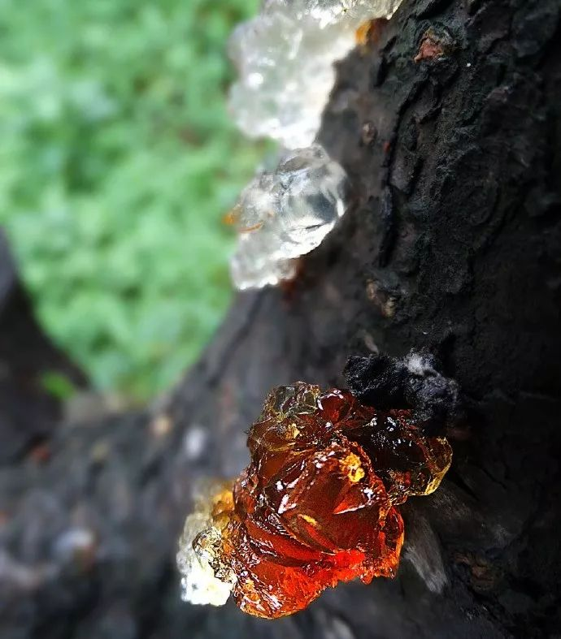
燕婷家所采摘的每一颗桃胶都未经加工修饰，形态大小都是自然的呈现，颜色有深有浅，都是正常现象，整个过程纯手工，无任何添加，也无硫熏，是完全纯天然健康食物~
桃胶美如颜玉，当桃树的树皮开裂之时，它就会分泌出来，其形状如透明的胶质一般，它还有另一个好听的名字"桃花泪"。
不断更替的营养从带着甜味的桃树树干里分泌出来，营养高脂肪低，口感弹滑，是摸得到吃得着的健康。
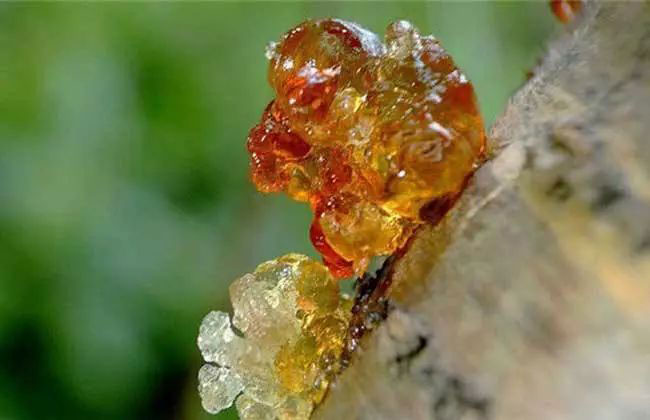
燕婷家乡的姑娘从小知道，桃胶被称为"平民燕窝"，因为它富含了满满的植物胶原蛋白，同时桃胶含有的脂肪量很低，食用起来口感又好，是爱美女生不可错过的美肤好食材，她们从小有食用桃胶的习惯，所以各个皮肤光滑白皙，丽质天成，洁白如玉，胶原蛋白满满！
尤其是脸上的皮肤，人看起来像年轻了10几岁，山里的女孩子没有钱买面膜、护肤品，就靠着吃桃胶美容，她们认为：吃一碗桃胶可以抵得上敷30张面膜。
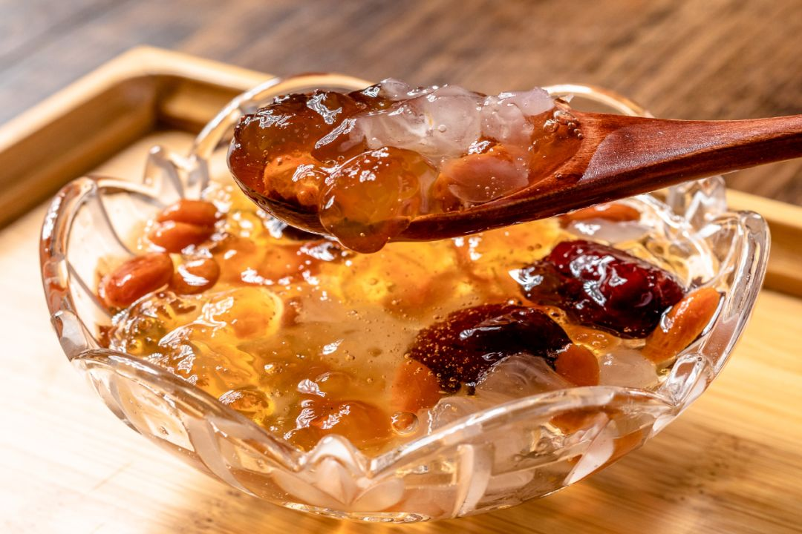
有类似效果的还有燕窝，而桃胶的价格不足燕窝的十分之一，其美容的功效完全不输于它，更难得是它的口感软滑，吃起来弹软可口，独特的味蕾体验，让人赞不绝口。
市场上见到的大部分桃胶都是一些碎渣，但是燕婷家的桃胶个头均匀，色泽透亮，燕婷只挑选个头最大，品相最好的桃胶给你。
在包装之前，他们会手工一颗一颗除去杂质，这一步很重要，因为可以避免你后续繁琐的清洗工作。
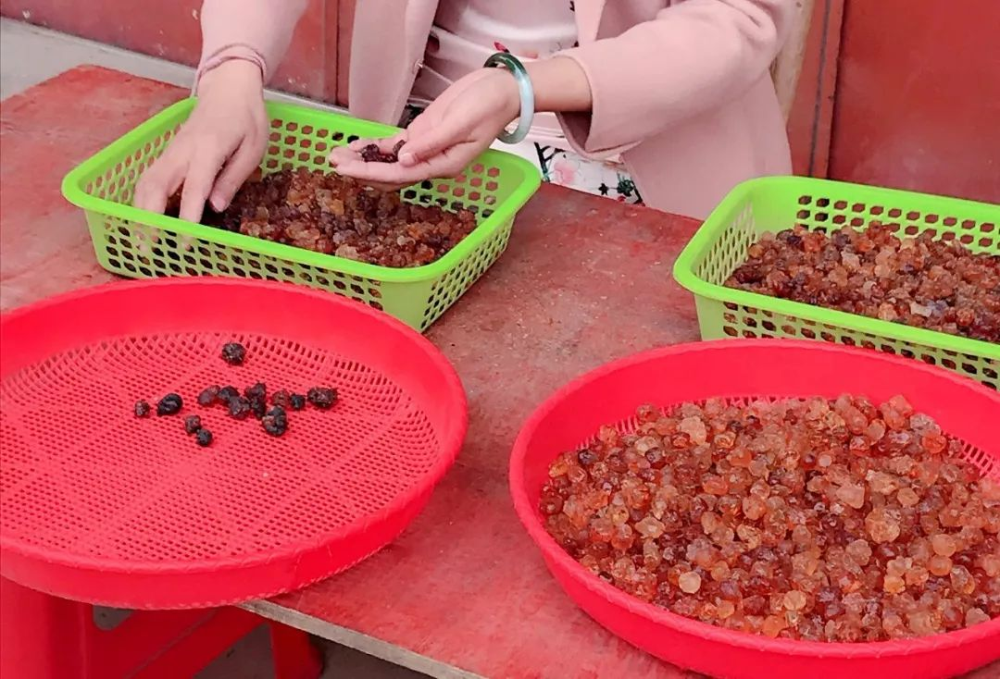
燕婷保证
一、胶质纯度：只卖云南野生桃胶，绝不用其他化工原料的松胶以次充好；
二、货真价实：绝不虚抬价格，只挣良心钱；
三、郑重承诺：不满意退货退款，來回运费算我们的！這個生意靠的就是回头客，我们深知這個道理！
如果你也想尝尝真正的桃胶，
可以添加燕婷的微信号：
yanting_002
【点击微信号复制微信】
燕婷每天会在朋友圈更新分享桃胶小知识
黑心商家收手吧！给山里人留条活路！
带着燕婷送的桃胶，我从云南大山回到了城里。
以前经常熬夜写稿子，导致皮肤粗糙等各种小问题。燕婷知道我的职业，特地嘱咐我，一定要经常炖桃胶羹吃，可以降脂养颜、补充胶原蛋白。
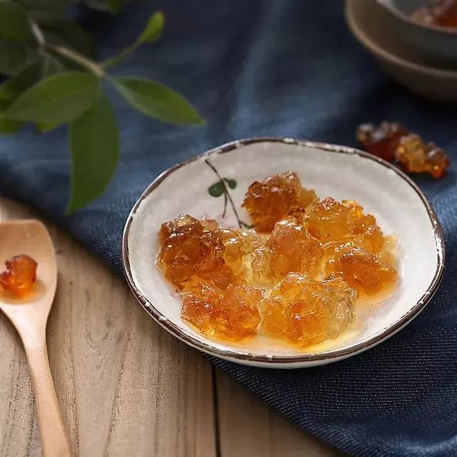
没想到喝了两个月桃胶，我这多年的胃痛得到缓解了！而且熬夜导致的粗糙暗黄的皮肤也在慢慢改善！
所以，别说桃胶不好，那是你没喝对，也没有买到真的桃胶！这种的自然状态是那种上千块的化妆品根本比不上！
亲身验证的改变让我深深感到，纯天然桃胶绝对是大自然的恩赐！是真正无污染的、生态的、可以唤醒生命本身自我疗愈力量的臻品！
后来，我发表了一篇《人工造假桃胶和真正桃胶的惊人差别》的文章，揭露桃胶市场乱象，替山里真正的桃胶发声，结果引起许多读者的关注。
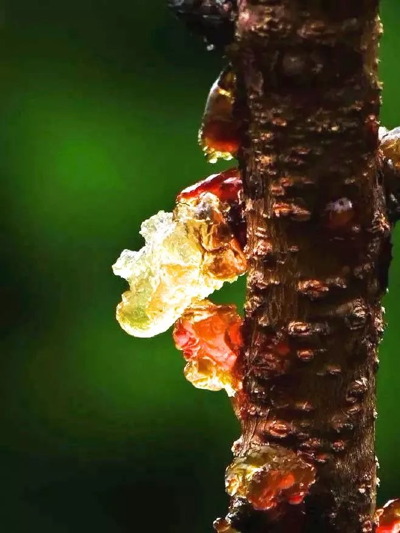
大家纷纷发起"抵制假桃胶，支持山里人"的活动，燕婷给我发信息说，村里陆续收到不少订单，解决了燃眉之急，村里的老人们都对我十分感激。
我也收到了许多读者的反馈留言，说桃胶帮助了他们，给他们的身体带来奇妙的变化，甚至许多跟我一样，是燕婷的桃胶治好了他们多年的小毛病。
我深知自己力量单薄，但是我相信人间自有真情在，之所以写这篇文章就是为了让更多人知道有燕婷这样一群人，在遥远的云南大山脚下，过着清苦的的日子，为更多的人献上这美丽"桃花泪"
燕婷保证
一、胶质纯度：只卖云南野生桃胶，绝不用其他化工原料的松胶以次充好；
二、货真价实：绝不虚抬价格，只挣良心钱；
三、郑重承诺：不满意退货退款，來回运费算我们的！這個生意靠的就是回头客，我们深知這個道理！
如果你也想尝尝真正的桃胶，
可以添加燕婷的微信号：
yanting_002
【点击微信号复制微信】
燕婷每天会在朋友圈更新分享桃胶小知识
桃胶对于女人来说是非常补身体的，而且还有一定的美容养颜功效，会让皮肤更加的有弹性，拥有一颗爱保养的心。
养颜桃胶，让女人逆生长的食物
极其方便又鲜美的吃法
在吃法上有非常多元化的选择，可以根据个人口感DIY创意。
最简单的，是将燕婷家小袋的桃胶、皂角米、雪燕一起泡开混煮15min就好了，或者是加几颗枸杞子，味道更鲜甜。
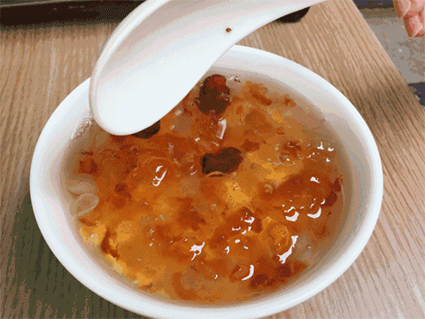
比较推荐和普遍的，还是慈禧太后的老方子，用桃胶、皂角米、雪燕炖鲜奶羹，滋阴养颜，口感功效胜似燕窝。
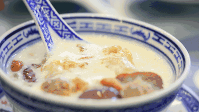
还有更精心的，喜欢熬夜的人们，还可以在桃胶鲜奶羹的基础上，与木瓜一同放入冰箱冷藏30min，润肺降肝火，爽口冰凉，沁透人心！
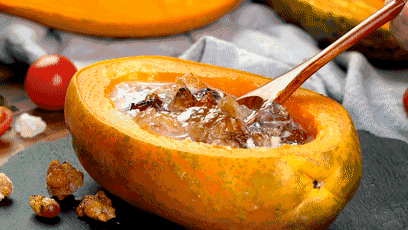
与动辄千百元的护肤品相比，经济又实惠。还可以用来当做纤体瘦身、润肠通便的代餐食用。
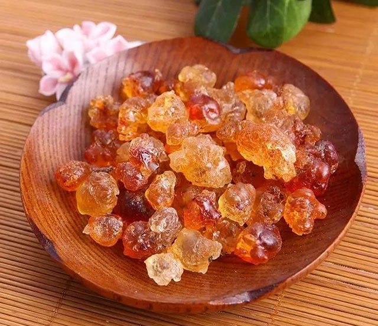
他们是一群不懂卖情怀，
不懂说鬼话骗人的山里人，
只希望靠自己的双手
把山里的宝贝送出去，
靠勤劳换取生活，养活家人。
燕婷说山里信号不好，所以如果回复各位朋友迟了还请见谅。
村里老人说，人在做，天在看。 山里人不求富贵，不懂情怀，不会骗人，他们一辈子在山里默默无闻采摘桃胶，只为一口好桃胶，献给懂它的有缘人！
燕婷保证
一、胶质纯度：只卖云南野生桃胶，绝不用其他化工原料的松胶以次充好；
二、货真价实：绝不虚抬价格，只挣良心钱；
三、郑重承诺：不满意退货退款，來回运费算我们的！這個生意靠的就是回头客，我们深知這個道理！
如果你也想尝尝真正的桃胶，
可以添加燕婷的微信号：
yanting_002
【点击微信号复制微信】
燕婷每天会在朋友圈更新分享桃胶小知识
精彩评论
小仙儿
半年前开始第一次吃桃胶，一开始只是觉得好吃，没想到吃多了才发现，桃胶居然比燕窝还好，润肺、祛燥、美容养颜！吃了根本停不下来
作者：
桃胶也曾是当年慈禧太后钦点御用的养颜补品哦~我也根本停不下来
刚刚
Tana
桃胶是不是还能瘦身呀？我吃了一个月之后体重居然有下降，太神奇了！
作者：
是的亲~桃胶不仅美味好吃，对皮肤好，还能通便瘦身哦~
1分钟前
明天会更好
每次回家的时候都会吃妈妈的爱心桃胶糖水，我一直都想问这是什么桃胶，很滑口感很好，而且我发现坚持吃居然皮肤会变细腻红润，抵抗力很提高了，比用护肤品还管用！
1分钟前
晴晴zz
买了一次回购了！口感很好，一开始还不太相信，吃了皮肤变好好，现在都不买面膜了，直接买这个吃，健康美容又养生！
作者：
平时吃点桃胶，能够调节体内津液系统，起到补充水分的作用，体内水分多了，皮肤就好了，这就是为什么会比面膜还管用
2分钟前
阿娇~
怎么买呢，我也想了解一下
作者：
添加燕婷微信就可以了，她会教你怎么吃哦~
4分钟前